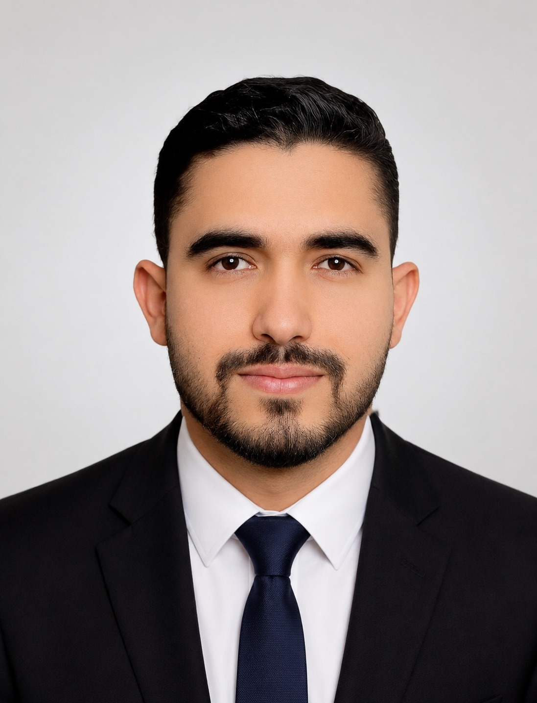

PLC & Automation
Siemens S7-1200/S7-1500, TIA Portal, Profinet, Ethernet, Profibus, PLC programming, commissioning, troubleshooting, HMI and ET200 configuration.
INDUSTRIAL AUTOMATION • ROBOTICS • SOFTWARE
Industrial Automation & Application Engineer
PLC programming, robotics and industrial software. Experience with Siemens S7-1200/S7-1500, TIA Portal, Profinet and RoboDK.

ABOUT ME
I am an Industrial Computer Engineer specializing in industrial automation, PLC programming, robotics, embedded systems and industrial software development.
My professional experience includes commissioning and troubleshooting Siemens S7-1200/S7-1500 PLCs and Profinet networks, offline robot programming with RoboDK, and developing practical automation solutions for industrial environments.
I hold a National Engineer Diploma in Industrial Computer Engineering from ENET’Com Sfax and a Professional Master’s in Development Engineering, Computer Robotics & Artificial Intelligence from ISET Rades. My engineering diploma has been assessed as comparable to a German qualification (ZAB Statement of Comparability).
PROFESSIONAL EXPERIENCE
Tunisia / Algeria project assignment. Support automation engineering, commissioning and production start-up for SIDEL industrial systems. Configure, test and commission Siemens S7-1200/S7-1500 PLCs and Profinet networks. Resolve technical issues during installation and production start-up. Completed advanced Siemens PLC programming training with TIA Portal.
Megarine, Tunisia. Designed and developed web, mobile and desktop applications using WinDev, WinDev Mobile and WebDev. Translated requirements into software solutions and integrated database systems. Improved usability and application performance through structured testing and optimization.
Sfax, Tunisia. Developed an offline robot-programming workflow in RoboDK for a six-axis CRP RH industrial robot. Generated and optimized machining toolpaths in Mastercam and integrated G-code into RoboDK. Implemented automatic collision detection and correction for safer trajectory validation.
TECHNICAL SKILLS
Siemens S7-1200/S7-1500, TIA Portal, Profinet, Ethernet, Profibus, PLC programming, commissioning, troubleshooting, HMI and ET200 configuration.
Offline programming and simulation with RoboDK, Mastercam toolpath generation, six-axis robotics, collision detection and production-oriented trajectory validation.
Web, mobile and desktop applications with WinDev, WebDev, Python, C/C++, Java, SQL/MySQL. Database integration and system optimization.
ESP32, Raspberry Pi, Arduino, computer vision, deep learning (CNN), real-time monitoring dashboards and IoT solutions for industrial environments.
SELECTED PROJECTS
Industrial field experience with Gemin Installation / SIDEL (Tunisia & Algeria). Supporting automation engineering, commissioning and production start-up of industrial systems.
Final-year engineering project: offline programming workflow for a six-axis CRP RH industrial robot using RoboDK and Mastercam-generated G-code.
IRD SOLUTION (Korba). Programmed an ESP32 using C/Python to detect and record conveyor items and built a live monitoring dashboard.
Center Delice (Bousalem). Facial-recognition access-control system on Raspberry Pi using Python and a CNN-based deep-learning model.
CSM_Gias (Bouargoub). Automated a spreadable-paste manufacturing process by replacing manual operations with automatic valves.
Electronics Company (Sidi Rezig). Application to track raw-material stock and improve inventory-flow visibility.
Best Info. Designed and developed web, mobile and desktop business applications with database integration.
CERTIFICATES
Cloud concepts, Azure services, security, privacy, compliance and trust.
View certificate →Core data concepts and how they are implemented using Microsoft Azure data services.
View certificate →AI workloads, machine learning, computer vision, NLP and conversational AI on Azure.
View certificate →Networking fundamentals, IP addressing, Ethernet, network protocols and device configuration.
View certificate →EDUCATION
National School of Electronics and Telecommunications of Sfax (ENET’Com) • Robotics & Control Systems
Higher Institute of Technological Studies of Rades (ISET Rades)
Higher Institute of Technological Studies of Rades (ISET Rades)
Secondary School Bousalem, Tunisia
ZAB Recognition (Germany): Statement of Comparability (Zeugnisbewertung) — engineering diploma assessed as comparable to a German qualification. Official certificate available upon request.
LET'S CONNECT
I'm interested in roles involving PLC programming, industrial automation, commissioning, robotics and application development.
Get in touchCONTACT
For professional opportunities, projects or technical collaboration, feel free to contact me.